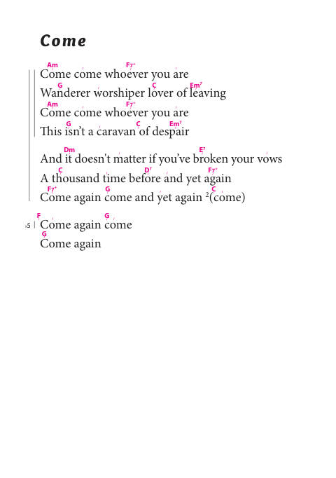

Alli Ruhi- Songs of the Rainbow.pdf
One of the largest and best-organized Rainbow collections in the archive: one song per page with lyrics, chord letters and rhythm-slash patterns beneath. It opens with Rumi's "Come, come, whoever you are" and ranges across circle standards, pagan chants (May the Circle Be Open), Andean and Spanish medicine songs (Cuñaq), and a long run of Hindu bhajans and aartis. The clean text layer makes it excellent for searching, and the chord-plus-rhythm format is unusually performance-ready. It appears to be the text twin of the illustrated scan filed as Rainbow songs and prays.pdf, which shares its cover art.